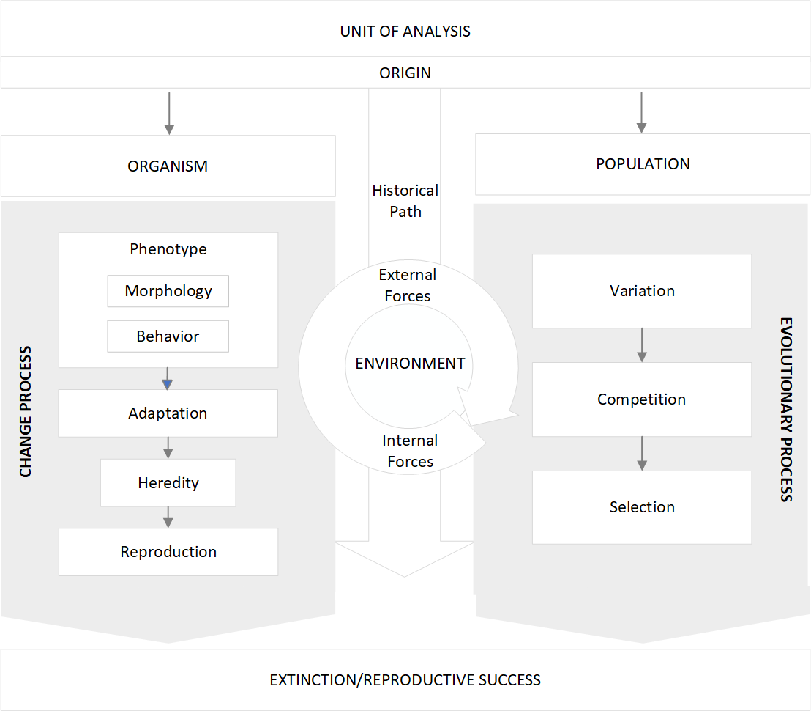
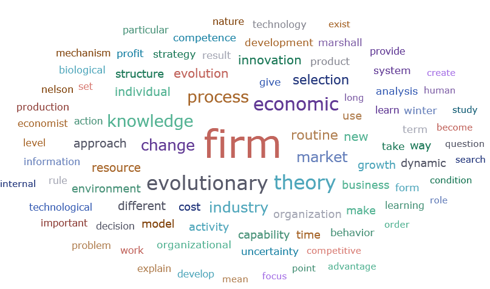

5 Results
5.1 Familiarization with Literature
The familiarization phase served as a preparatory step in the meta-framework elucidation process, providing a broad understanding of the diverse contexts in which “evolution” has been applied to explore fundamental questions across multiple disciplines. The goal was to establish a robust intellectual foundation by examining how evolutionary concepts and processes are used to analyze, explain, and predict phenomena across a wide range of knowledge areas. This stage enabled the identification of key theoretical frameworks, influential authors, and emerging trends in evolutionary thought, providing essential insights that informed the selection of a knowledge baseline for subsequent research stages.
Table 2 provides a summary of the various knowledge disciplines explored during the familiarization phase, detailing the number of works reviewed (594) and the range of years they cover.
| Discipline | Number of works | Years |
|---|---|---|
| Anthropology | 6 | 2002-2023 |
| Behavioral economics | 16 | 1956-2022 |
| Darwin/Darwinism | 20 | 1968-2023 |
| Other classical authors (Spencer, Lamarck) | 19 | 1965-2015 |
| Biology | 106 | 1942-2024 |
| Computing and IT | 33 | 1988-2021 |
| Cultural studies | 5 | 2004-2020 |
| Economics | 208 | 1898-2024 |
| Genetics | 32 | 1953-2022 |
| Neuroscience | 7 | 1980-2023 |
| Political science | 8 | 2003-2022 |
| Evolutionary thinking | 52 | 1944-2023 |
| Psychology | 23 | 1978-2021 |
| Sociobiology | 14 | 1944-2021 |
| Systems Biology | 36 | 1934-2022 |
| Transdisciplinary thinking | 9 | 1972-2023 |
The reviewed literature in the natural sciences encompassed various fields, including evolutionary biology, which examines the processes and mechanisms driving the diversity and complexity of life; darwinism, focusing on how species evolve over time due to environmental pressures and variation within populations; systems biology, which applies evolutionary concepts to analyze complex biological networks; genetics, focusing on heritable variation and mutation as drivers of change; and neuroscience, which examines how evolutionary mechanisms influence cognition and behavior.
In the social sciences, evolutionary approaches were found in disciplines such as economics, with its focus on dynamic processes of change, the role of innovation and technological development, path dependence, bounded rationality in decision-making, firm and industry heterogeneity, and the influence of institutional and cultural evolution on economic systems; psychology, exploring the evolutionary origins of behavior and cognition; anthropology and sociology, which examine the evolution of cultures and societies; and political science, which integrates evolutionary perspectives to understand the emergence of cooperation and conflict.
Furthermore, the review also included advancements in computational modeling and simulation of evolutionary systems using IT-based tools, offering robust frameworks for analyzing adaptation, selection, and emergent behaviors across natural, social, and artificial systems.
A key outcome of the familiarization phase was recognizing the inherently transdisciplinary nature of evolutionary studies. Evolution serves as a foundational explanatory paradigm not only within the natural sciences but also in social-related disciplines. By examining these diverse fields, the familiarization process sought to uncover common principles, distinctive disciplinary perspectives, and opportunities for integrating evolutionary theories across various domains.
Several key transdisciplinary trends emerged, including:
Evolution as a Universal Framework: The application of evolutionary principles beyond biology, in fields like systems science and social evolution, suggests a growing recognition of evolution as a unifying framework for understanding change and complexity.
Integration of Genetics and Culture: Emerging literature highlights the interplay between genetic evolution and cultural evolution, emphasizing the co-evolutionary dynamics that shape human societies and behaviors.
The Role of Complexity and Systems Thinking: A significant trend involves leveraging evolutionary theories to study complex systems, such as ecosystems, economies, and artificial intelligence, revealing insights into emergent properties and adaptive strategies.
Focus on Mechanisms of Change: Across disciplines, there is a shift towards understanding the mechanisms that drive evolutionary change, including innovation, cooperation, and adaptation in dynamic environments.
The familiarization process not only provided a panoramic view of evolutionary ideas but also laid the groundwork for selecting a knowledge baseline in the subsequent steps. The insights gained during this phase ensured that the chosen baseline would reflect the complexity, breadth, and depth of evolutionary frameworks across natural and social sciences, fostering a comprehensive and integrative analysis.
5.2 Research Questions and Objectives
Building on the key themes identified during the familiarization stage, the following research questions and objectives were established to guide the construction of the meta-framework:
How can evolutionary principles provide a unifying framework to analyze and understand firms’ adaptive dynamics and complexities across diverse environments?
What are the core mechanisms driving firms’ evolutionary trajectories, and how can these mechanisms inform strategies for uncertain business contexts?
How can biological metaphors and evolutionary analogies help elucidate the co-evolutionary strategies and behaviors of firms within competitive markets?
The following objectives were outlined to address the research questions:
Analyze the potential of evolutionary principles as a universal framework for studying complexity and change within and across firms.
Investigate the interactions between firms and industries, identifying key patterns and co-evolutionary dynamics that shape behavioral and strategic outcomes.
Explore the application of systems thinking and complexity theory to the study of evolutionary firms, emphasizing the emergence of adaptive strategies in different contexts.
Identify and synthesize the primary mechanisms of evolutionary change and assess their relevance to firm dynamics.
Construct a comprehensive meta-framework integrating these insights to advance theoretical understanding and practical applications in the study of firms’ evolutionary dynamics.
5.3 Knowledge Baseline
Unlike traditional meta-framework synthesis approaches, which typically require extensive literature reviews, consultations, and deep topic expertise to develop an a priori framework, our approach focused on selecting a seminal work from the existing literature that thoroughly addressed the key concepts and relationships defining evolution in the natural sciences. This reference work provided a foundational knowledge base for elucidating our a priori framework, simplifying the subsequent coding and synthesis process while eliminating the need for extensive preparatory efforts.
The selected work was Peter J. Bowler’s seminal book, “Evolution: The History of an Idea” (2009), which examines the historical trajectory of evolutionary thought and offers a comprehensive foundation for understanding the development of economic systems. Bowler’s interdisciplinary perspective emphasizes the dynamic nature of economic processes as evolving systems shaped by continuous change. His analysis provides valuable insights for evolutionary economics by uncovering the historical origins of evolutionary ideas and their relevance to economic analysis.
Bowler’s work is also relevant to our research for its exploration of the interplay between cultural, scientific, and anthropological factors in shaping evolutionary theories. In the book, the author traces the development of evolutionary thought from its origins in ancient Greece to its modern understanding, highlighting how societal beliefs and values influenced these concepts. His insights are particularly valuable for evolutionary economists, as it underscores the importance of understanding the cultural and ideological contexts in which economic systems emerge and evolve.
The author delves into the diverse contributions of key figures to evolutionary thought, examining the ideas and theories of prominent thinkers and highlighting their impact on the evolution of the field. Understanding this intellectual lineage enriches our a priori framework by offering valuable insights into the historical foundations of contemporary economic theories and methodologies. Bowler’s analysis further emphasizes the diversity of perspectives within evolutionary thought, providing a wide array of ideas to inform the analysis of evolutionary economic systems.
Ultimately, Bowler’s book explores the controversies and debates surrounding the concept of evolution, highlighting the different interpretations and challenges to evolutionary theory throughout history. This aspect is particularly relevant for constructing our a priori framework, as it emphasizes the complex and multifaceted nature of economic evolution. By examining historical debates over evolutionary theory, our a priori framework gains a deeper appreciation for the contested nature of economic processes and the diverse array of factors that shape them. Bowler’s nuanced analysis encourages critical engagement with evolutionary concepts and methodologies, fostering a more robust and interdisciplinary approach to studying economic systems.
In summary, Bowler’s comprehensive treatise on evolution provides a robust foundation for understanding key themes in evolution and aggregate dimensions, serving as the baseline for elucidating our a priori framework.
5.4 A Priori Framework
The resulting a priori framework contains the following key themes and relationships (Fig. 1):

5.4.1 Unit of analysis
In evolutionary systems, the unit of analysis represents the fundamental entity on which observations and analyses are centered. Historically, the focus has shifted over time, beginning with the organism—defined in biology as an individual living entity, such as a plant, animal, or microorganism, capable of independent existence and reproduction. Later, attention moved to populations, and with the advent of the modern synthesis, to genes.
When determining the unit of analysis in an evolutionary system, it is essential to distinguish clearly between the organism and the population as the primary focus of study. The individual organism represents a single living entity, while the population consists of a group of organisms of the same species, occupying a defined geographic area and sharing genetic similarities. The organism serves as the fundamental building block of the population, with its traits, behaviors, and adaptations shaping the broader dynamics of the population. As outlined in Darwin’s theory, natural selection operates at the level of the individual organism, driving changes in the frequencies of traits within the population over time.
The choice of the unit of analysis significantly influences the scope and focus of evolutionary studies. Focusing on individual organisms provides detailed insights into microevolutionary processes such as natural selection and genetic drift. On the hand, analyzing populations allows for the exploration of macroevolutionary patterns and trends, including speciation and diversification, by examining collective dynamics and genetic variability within and between populations. In essence, while studying individual organisms sheds light on localized mechanisms of evolutionary change, focusing on populations offers a broader perspective on species evolution and adaptation over time. Together, both units of analysis are essential for comprehensively understanding the complexities of evolution within natural systems, as their interplay shapes the evolutionary trajectory of species.
5.4.2 Origin
The formation of populations from individual organisms fundamentally shapes the evolutionary trajectory of natural systems, making the study of individual origins a cornerstone of evolutionary analysis. Exploring the origins of individual organisms allows researchers to address essential questions about the emergence, diversification, distribution, and persistence of life forms on Earth. This inquiry involves examining historical evidence to uncover the mechanisms behind the origination and divergence of new species from common ancestors. Building on this foundation, evolutionary analysis can transition to exploring the trend of increasing complexity and the underlying forces that drive this progression.
The concept of “origin” is closely related to that of “generation” and “development processes”. While the study of the “origin” focuses on the emergence of new entities in evolutionary systems, whether they are new individual organisms or entire species, “generation” refers to the processes by which life perpetuates itself over time through reproduction and inheritance, ensuring the continuity and variation necessary for evolution. Meanwhile, “developmental processes” involve the mechanisms that, beginning at the embryonic stage, shape the types of changes organisms can experience over time. Developmental processes guide how individual organisms grow, mature, and express their traits throughout their lifetimes. Together, these concepts address key mechanisms that shape the evolutionary trajectory of individuals and populations: how novel forms of life arise (origin), how they are perpetuated (generation), and how their traits are expressed and influence evolutionary potential (developmental processes).
5.4.3 Evolutionary vs change processes
Evolutionary processes encompass dynamic mechanisms that drive changes within populations across successive generations. Rather than acting solely on individual organisms, these mechanisms result in accumulated changes that are inherited within populations. Analyzing evolution at the population level reveals broad patterns of genetic variation, selection pressures, and speciation processes. Gene flow plays a crucial role by spreading advantageous traits and maintaining genetic diversity among populations. In contrast, isolation mechanisms, such as geographic or reproductive barriers, limit gene flow, fostering genetic differentiation and potentially leading to speciation. Natural selection operates on genetic variation, favoring traits that enhance survival and reproduction in specific environments. Meanwhile, genetic drift and mutation contribute additional layers of complexity, influencing population dynamics and shedding light on overarching evolutionary trends.
Change processes occur within individual organisms, whether phenotypic, behavioral, or genetic, often in response to environmental pressures and internal dynamics. When changes occur, they contribute to the genetic variation within populations. Natural selection acts as a guiding force, favoring traits that enhance survival or reproductive success in specific ecological niches. This selective process, influenced by environmental factors, shapes an organism’s adaptation and survival chances. Over successive generations, advantageous traits become more common, while less beneficial traits fade.
The most comprehensive evolutionary approaches examine the interplay between individual-level changes and broader population-level processes. This integrated perspective clarifies how individual adaptations shape the overall evolutionary trajectory of species. By studying the relationship between individual-level changes and population dynamics, researchers can gain a deeper understanding of the mechanisms driving species evolution and adaptation in various ecological contexts.
5.4.4 Environment
The environment plays a key role in shaping evolutionary processes, as it provides the backdrop for how populations and individuals interact and adapt. In natural systems, the environment consists of both biotic and abiotic factors that influence species distribution, behavior, and evolutionary paths. Biotic factors refer to interactions among living organisms, such as competition for resources, predation, and symbiotic relationships. Abiotic factors, in contrast, include non-living elements like climate, geography, and physical resources. Together, these factors create the dynamic complexity of ecosystems, driving species to continually adapt for survival and reproduction.
In addition to these factors, evolutionary processes are driven by exogenous and endogenous dynamic forces, each having varying intensities and directional impacts. Exogenous forces originate from external sources outside individual organisms or ecosystems, such as climate fluctuations, geological events, and rare phenomena like asteroid impacts. These external influences can significantly affect habitats, species distributions, and evolutionary trajectories by altering environmental conditions and triggering evolutionary responses. In contrast, endogenous forces emerge from within organisms or ecosystems, or through interactions among organisms. Endogenous forces include genetic mutations, physiological responses, and ecological interactions within populations, all of which shape genetic compositions and population structures over time.
Environmental forces and factors are fundamental in shaping an organism’s fitness, guiding natural selection, and determining evolutionary pathways. These elements drive species to evolve traits and behaviors adapted to their specific environmental niches, enhancing their survival and reproductive success. Working in tandem, they play distinct yet complementary roles. Environmental factors provide the foundational conditions and contexts for life, such as climate, habitat, and biological interactions, while forces actively propel changes within these contexts. Together, they create a dynamic interplay that is central to understanding evolution. Grasping this relationship is critical for uncovering the mechanisms behind species adaptation, biodiversity patterns, and ecosystem resilience.
The environment is also shaped by its historical trajectory. Past events, such as environmental disturbances and climatic shifts, leave lasting marks on ecosystems, influencing species composition, habitat availability, and biodiversity. Ecosystems with long histories tend to have greater biodiversity and genetic resilience, while disturbances may leave legacies that constrain adaptation. Incorporating historical perspectives into evolutionary analysis provides key insights into path-dependent processes, which are crucial for designing effective conservation strategies that strengthen ecosystem resilience.
5.4.5 Phenotypic traits
The structural and behavioral traits of individual organisms are central to the evolutionary dynamics of natural systems. Structural traits encompass physical characteristics such as morphology, anatomy, and physiology, which define an organism’s form and function. These traits play a critical role in enabling organisms to adapt to their environments and interact with other species. Behavioral traits, in contrast, involve the actions and responses of organisms within their environment, including activities like feeding, mating rituals, communication, and social interactions.
The interaction between structural and behavioral traits influences the ecological niche that organisms occupy and determines their fitness within a specific environment. Organisms with advantageous traits have a higher likelihood of survival and reproduction, passing these traits on to future generations. This process drives the emergence, modification, or loss of traits, shaping an organism’s adaptive strategy over time. By studying the morphological, physiological, and behavioral adaptations of organisms, researchers can uncover valuable insights into species strategies, the dynamics of ecological communities, and the co-evolutionary processes that shape biodiversity through generations.
5.4.6 Adaptation
Adaptation is a fundamental driver of evolutionary change at the individual level within natural systems. Organisms continuously modify their traits, behaviors, and physiological processes in response to environmental pressures. At its core, adaptation enhances an organism’s fitness and survival within specific ecological niches. Through natural selection, individuals with traits that provide reproductive or survival advantages under prevailing conditions are more likely to pass on their genes. Over time, this process results in the accumulation of adaptive traits within populations, improving their overall fitness and resilience to environmental challenges.
Adaptation operates through various mechanisms, including phenotypic plasticity, genetic mutations, and behavioral changes. Phenotypic plasticity enables traits to adjust dynamically to environmental conditions, while mutations introduce new genetic variations. Behavioral adaptations improve resource utilization, predator avoidance, and reproductive success. Understanding adaptation at the individual level is key for uncovering the mechanisms that drive evolutionary change and species diversification. This knowledge can also illuminate how species develop adaptive strategies, the emergence of novel traits, and the evolving dynamics of ecological interactions over time.
5.4.7 Heredity
Heredity is the process through which genetic information is passed from one generation to the next, serving as a cornerstone of evolutionary processes. Encoded within DNA molecules, genetic material contains the instructions that guide an organism’s development, growth, and functioning. Heredity operates through the replication and transmission of genetic material during processes such as mitosis and meiosis. This transmission, combined with mechanisms like genetic mutations and recombination, creates variation in traits among individuals within a population. Such variation is crucial for understanding the mechanisms driving evolutionary change, as it shapes species’ diversity, adaptation, and persistence over time.
Heredity is intrinsically linked to reproduction, which ensures the transfer of genetic information from parents to their offspring. This continuity of genetic traits across generations provides the foundation for evolutionary change. Mutations and genetic recombination during reproduction introduce diversity within populations, which fuels natural selection and facilitates adaptation to shifting environmental conditions. Exploring the interplay between heredity and reproduction is therefore essential for understanding how individual-level changes contribute to evolutionary dynamics, revealing the processes that drive species evolution and adaptation in natural systems.
5.4.8 Reproduction
Reproduction is a fundamental process driving evolutionary dynamics at the individual level. Through the production of offspring, organisms perpetuate their genetic lineage and pass on hereditary traits, ensuring the continuity of life and preserving genetic diversity within populations. Both sexual and asexual reproduction contribute to this diversity, enriching the genetic pool and enhancing a population’s adaptability. Factors such as mate selection, mating behaviors, timing, and reproductive success significantly influence the reproductive process, shaping the genetic composition and evolutionary direction of species.
Modern evolutionary theory highlights reproductive success as the key driver of natural selection, emphasizing the importance of transmitting genetic information to future generations. This focus has spurred extensive research into sexual selection, reproductive mechanisms, and the role of geographic barriers in species diversification. Understanding these mechanisms is thus vital for unraveling the complexities of evolution in natural systems. However, this perspective is not without criticism. Stephen Jay Gould, for instance, argued against an overly narrow focus on reproductive success as the sole driver of evolutionary change (2002). Ultimately, exploring reproduction at the individual level provides valuable insights into the adaptive strategies species employ, the preservation of genetic diversity, and the evolutionary forces shaping populations over time.
5.4.9 Variation
In evolutionary science, variation refers to the diversity of traits and characteristics within populations, influenced by both genetic and environmental factors. Variation provides the foundation for understanding phenotypic and genotypic differences within and among species. Variation is also central to competition and selection, as individuals possessing advantageous traits are more likely to survive, reproduce, and pass these traits to future generations. Over time, this differential reproductive success promotes the spread of favorable traits, driving evolutionary change.
A key source of variation is mutation, which introduces new genetic variants into populations. While most mutations are neutral, others can produce significant phenotypic differences, potentially offering advantages or disadvantages. The environment plays a critical role in determining which mutated traits are favored and proliferate within a population. Evolutionary analysis must account for this interplay between genetic variation and environmental pressures to fully understand how traits evolve and populations adapt.
5.4.10 Competition
Competition is a key driver of evolutionary dynamics within natural systems, arising when organisms compete for limited resources such as food, water, or territory. This pressure favors traits that provide a competitive advantage, leading to evolutionary changes and the inheritance of beneficial traits by subsequent generations. Within populations, competition takes various forms: direct competition for resources, interference competition involving aggressive interactions, and exploitative competition where one organism outcompetes another by more efficiently utilizing shared resources. These interactions often drive niche differentiation, where species adapt to partition resources, reducing direct competition and enabling coexistence within the same habitat.
Competition also fuels evolutionary innovation and adaptation, pushing species to develop traits and behaviors that provide a competitive edge. This process can lead to species diversification and the evolution of complex ecological relationships over time.
Ultimately, competition lays the foundation for natural selection, enabling the accumulation of adaptive traits while diminishing the prevalence of less advantageous ones. Understanding the dynamics of competition is critical for exploring species interactions, community dynamics, and evolutionary pathways in ecosystems. By examining these interactions, evolutionary analysts gain valuable insights into the forces shaping biodiversity, ecological resilience, and the stability of natural systems.
5.4.11 Selection
Selection mechanisms operate on the diversity of individual units, favoring traits that provide competitive advantages and enhance survival. Selection processes are fundamental drivers of evolutionary change. Among them, natural selection is a primary mechanism, favoring traits that increase an organism’s fitness and reproductive success in its environment. Individuals with advantageous traits are more likely to survive and reproduce, passing their genetic material to future generations. Over time, this differential reproductive success results in the accumulation of beneficial traits within populations, enabling adaptation to changing environmental conditions.
However, although natural selection is a cornerstone of evolutionary theory, selection operates through various mechanisms, including directional selection, stabilizing selection, and disruptive selection. Directional selection shifts traits towards one extreme, stabilizing selection maintains the status quo within a population, and disruptive selection leads to divergence. Understanding these selection processes is crucial for elucidating the mechanisms driving evolutionary change and biodiversity within natural systems.
Selection operates through multiple mechanisms, each influencing evolutionary trajectories differently:
Directional selection pushes traits toward one extreme, favoring a specific adaptation.
Stabilizing selection preserves the current state, maintaining traits that are already well-suited to the environment.
Disruptive selection favors extreme traits at both ends of the spectrum, often leading to divergence within a population.
Each type of selection represents a distinct pathway that drives population adaptation and evolution over time. Understanding these processes is therefore important for revealing how evolutionary change occurs and for explaining the development of biodiversity within natural systems.
5.5 Systematic Literature Review/ Thematic Synthesis (ver doc “best-fit”)
5.5.1 Analysis of Key Concepts
Word clouds and word counts offer an initial overview of the main concepts emerging from the reviewed literature by highlighting the most frequently occurring terms. These tools serve as a preliminary step in identifying dominant themes, patterns, or areas of focus that warrant further in-depth analysis. However, their insights are inherently limited, as they do not capture the context in which words are used. Therefore, the results from word clouds and word counts must be interpreted alongside a more detailed thematic or contextual analysis to ensure a comprehensive understanding of the findings.
The word cloud generated by Atlas.ti provides a visual summary of term frequency across the reviewed literature (Fig. 3). To enhance clarity, only terms cited 80 times or more are included. In this representation, the size of each word reflects its frequency: larger words indicate higher frequency within the dataset, while smaller words represent less commonly occurring terms.

In addition to the word cloud, word counts offer a numerical breakdown of term frequency, providing a more precise quantification of trends within the literature (Fig.4). Furthermore, analyzing frequent terms can serve as a quality control measure, revealing issues like an over-reliance on filler words or uncovering unexpected patterns in the language used by the authors.
The analysis of the word cloud and word list offers several important insights. Firstly, the prominence of terms such as “firm”, “evolutionary”, “economic”, and “theory”, confirms the relevance and validity of the reviewed literature, aligning closely with the study’s research questions and objectives. Additionally, the frequent appearance of terms related to the components of evolutionary change processes—such as “routines”, “knowledge”, “selection”, “resources”, “market” and “innovation”—highlights the literature’s focus on key concepts integral to understanding evolutionary dynamics. Notably, the presence of terms such as “firm” and “business” alongside “industry” reveals the dual-level dynamics that characterize the analysis of the evolutionary firm, encompassing both organizational and broader industrial perspectives.